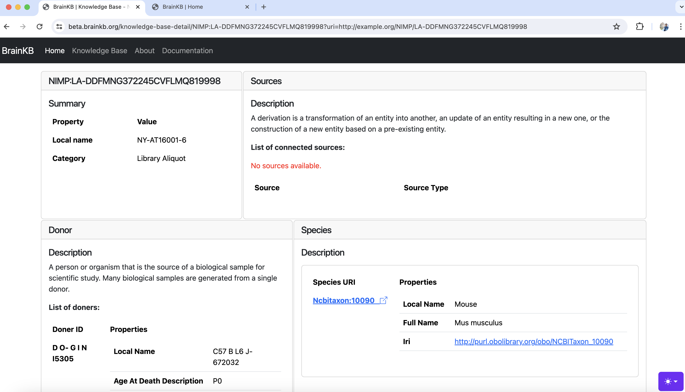

This section provides overview into who can benefit from BrainKB and the various scenarios it can apply. You will learn how BrainKB can support your work, enhance your projects, and facilitate collaboration, regardless of whether you are a researcher, educator, developer, or enthusiast.
Neuroscience researchers: BrainKB’s primary audience is neuroscience researchers, who can use the platform to integrate, visualize, and analyze neuroscience data. They can also capitalize on the platform’s ability to synthesize their data (or knowledge) into KGs.
Research Labs and Academic Institutions: BrainKB will be an invaluable resource for teaching and research in academic contexts specializing in neuroscience research. It offers convenient access to integrated neuroscience data for faculty and students.
Policy Makers and Healthcare Professionals: Neurology policymakers can use BrainKB, aka the neuroscience knowledge that BrainKB hosts, to make policy decisions. Furthermore, healthcare professionals in neurology (or clinical neuroscience) may also use BrainKB knowledge to understand and improve neurological disease outcomes.
Neuroscience-related Companies: Companies specializing in developing drugs for neurological diseases can use the platform’s KGs to gain insights into neurological conditions and treatments.
Below, we highlight some of the key use cases for BrainKB.
Extraction/Integration/Refinement: BrainKB will provide features to extract knowledge from diverse sources, such as raw text and scientific publications, and integrate it with the knowledge represented via KGs. Additionally, BrainKB will also provides features to refine the extracted knowledge, e.g., through humans in the loop.
Cards: The BrainKB web application allows easy visualization of the knowledge of interest to scientists/researchers stored in KGs and their corresponding interconnected knowledge. Fig. 3.1 shows a snippet of the entity card from the BrainKB web application, which can be accessed at http://beta.brainkb.org.

Fig. 3.1 Snippet of Entity card from BrainKB web application.#
Casual Inference: Casual inference helps distinguish causation from correlation, particularly important the domains like neuroscience [Danks and Davis, 2023, Huang and Vidal, 2024]. BrainKB, which stores the knowledge represented via KGs, thus supports causal inference. The reason is that the KGs can encode the (casual) relationships between entities and enable (casual) reasoning [Huang and Vidal, 2024].
Human in the loop:
BrainKB allows the creation of KGs constructed from heterogeneous sources, e.g., text and CSV files, in a (semi-) automated fashion (e.g., using NLP) and through community contribution. BrainKB includes human-in-the-loop features, which ensure quality control of the KGs. The human in the loop is also a step in the maturity model for operations in neuroscience [Johnson et al., 2023], helping to optimize KGs (knowledge graphs) curation.
Example:
When new evidence is submitted, it is placed in a queued (or hold) stage and progressed upon the moderators’ review. Changes might be required based on the review before it appears in the evidence entity card.
If the KGs are manually or automatically created, the moderators will review the concepts’ alignment and determine whether the resolution (e.g., entity resolution) has been performed correctly.
Compare Atlases: BrainKB also integrates knowledge from diverse knowledge platform services if available for integration, providing the feature to compare knowledge from across different atlases (e.g., Allen Brain Atlases).
Find/correct Errors: BrainKB will provide a feature to search existing knowledge and correct errors if any.
Add information/API: BrainKB offers an API endpoint that enables seamless integration with its platform. These endpoints facilitate data ingestion from various sources, such as CSV files or raw text, for constructing KGs, performing search operations, and conducting analyses on the stored KGs.
Doing meta-analysis: Meta-analysis is a knowledge-intensive task that requires significant time and effort to find related studies, identify evidence items, annotate the contents, and aggregate the results [Tiddi et al., 2020]. BrainKB, which stores knowledge from diverse data sources, including scientific publications, facilitates the meta-analysis.
Task: Alice wants to know if he can gain new insights from their newly collected neuroscience data.
Precondition: The newly collected neuroscience dataset, which includes demographics, gene expression maps, and structural and functional MRI scans, is usable and uncorrupted.
Flow:
Alice uploads the data into the BrainKB platform through the BrainKB UI (User Interface).
BrainKB, the system, then analyzes data. If any error, e.g., unsupported file format, it will return the error; otherwise, the system will proceed to the next step of knowledge extraction.
The system will perform the knowledge extraction, validation, and alignment operation. If the validation or the alignment issue cannot be resolved automatically, the extracted knowledge represented via KG is flagged for expert review. Upon the successful review, the KGs are integrated (or stored) in the BrainKB storage and is available for visualization and analysis.
Postcondition: Alice discovers new insights through the integration of diverse knowledge sources represented in BrainKB’s KGs.
Erik C. Johnson, Thinh T. Nguyen, Benjamin K. Dichter, Frank Zappulla, Montgomery Kosma, Kabilar Gunalan, Yaroslav O. Halchenko, Shay Q. Neufeld, Michael Schirner, Petra Ritter, Maryann E. Martone, Brock Wester, Franco Pestilli, and Dimitri Yatsenko. A maturity model for operations in neuroscience research. 2023. URL: https://arxiv.org/abs/2401.00077, arXiv:2401.00077.
Ilaria Tiddi, Daniel Balliet, and Annette ten Teije. Fostering scientific meta-analyses with knowledge graphs: a case-study. In Andreas Harth, Sabrina Kirrane, Axel-Cyrille Ngonga Ngomo, Heiko Paulheim, Anisa Rula, Anna Lisa Gentile, Peter Haase, and Michael Cochez, editors, The Semantic Web, 287–303. Cham, 2020. Springer International Publishing.